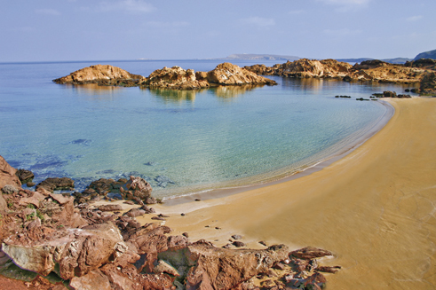

Playas y turismo. Comprometidos con el medioambiente
 El fenómeno turístico no escapa a la tendencia de que es posible conservar nuestro capital natural y cultural, sin comprometer el futuro. Y esta aspiración puede ser compatible con el desarrollo en el presente. Es el llamado turismo sostenible. En Menorca, este concepto quedó acuñado definitivamente en 1993 con la declaración por la Unesco de “Reserva de la Biosfera”.
El fenómeno turístico no escapa a la tendencia de que es posible conservar nuestro capital natural y cultural, sin comprometer el futuro. Y esta aspiración puede ser compatible con el desarrollo en el presente. Es el llamado turismo sostenible. En Menorca, este concepto quedó acuñado definitivamente en 1993 con la declaración por la Unesco de “Reserva de la Biosfera”.
 El turismo, desde la perspectiva social, representa la posibilidad de satisfacer las aspiraciones legítimas de las personas de poder disfrutar de otros lugares, conocer otras culturas y desarrollar actividades distintas a las habituales. Entre los aspectos mejor valorados en un destino turístico se encuentran la hospitalidad de sus gentes, la gastronomía, la oferta cultural, sus paisajes, su estado natural y, sobre todo, sus playas. Aspectos en los que Menorca destaca.
El turismo, desde la perspectiva social, representa la posibilidad de satisfacer las aspiraciones legítimas de las personas de poder disfrutar de otros lugares, conocer otras culturas y desarrollar actividades distintas a las habituales. Entre los aspectos mejor valorados en un destino turístico se encuentran la hospitalidad de sus gentes, la gastronomía, la oferta cultural, sus paisajes, su estado natural y, sobre todo, sus playas. Aspectos en los que Menorca destaca.
Bajo la premisa de que si no hay sostenibilidad no se podrá ofrecer calidad, el sector turístico de la isla se está esforzando en fomentar la puesta en marcha de procesos de protección medioambiental, con el fin de respetar los frágiles equilibrios que caracterizan a Menorca como destino. La participación responsable de todos los sectores implicados en el proceso de planificación turística, junto a una apuesta por la innovación cultural, tecnológica y profesional, son los objetivos prioritarios en esta nueva estrategia orientada a preservar la calidad de Menorca como destino y a satisfacer las nuevas demandas emergentes de los turistas del siglo XXI.